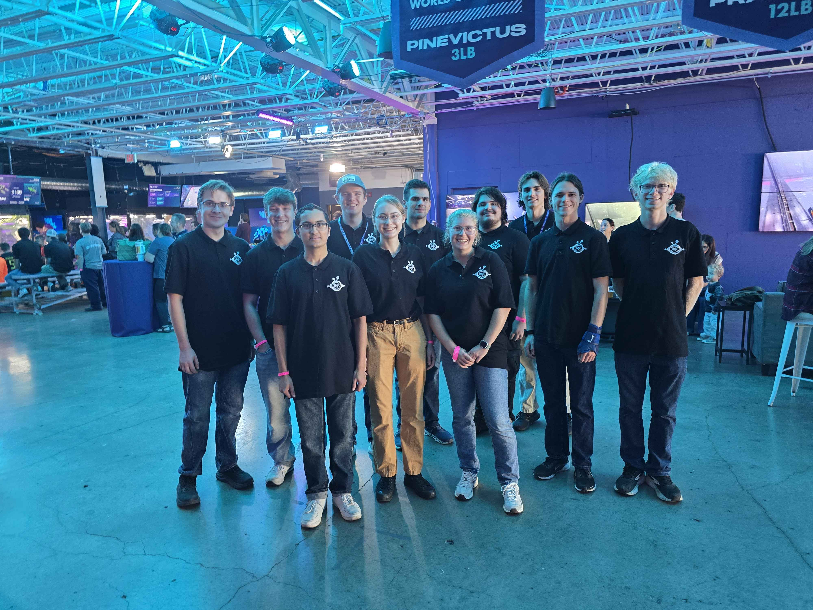

Spring 2026 — Present
Robotics & Automation Society
President
I was elected president in March 2026 after a year as the club's Director of Operations. I now supervise six undergraduate projects, including two Combat Robotics teams, Rover, Micromouse, Robotic Arms, and Robodog. I worked with prospective members to launch three new projects (a Solar Recharging Drone, a new Combat Robotics weight class, and an Autonomous Drivetrain), led recruitment that grew the club by 30 new members, and led the 2026 initiative to design a dedicated PCB and control box for the club's linear rail robotic arm.
40
Members
6
Active Projects
$65k
Budget Managed
3
Annual Competitions
Milestones
October 2026
Battlebots competition at NHRL!
September 2026
Oversaw the beginning of a new Autonomous Drone Project, and collaborated with a local Pittsburgh makerspace for mentorship & sponsorship
August 2026
Launched increased recruitment during Welcome Week, resulting in 15 new committed members
March 2026
Elected president, taking over for 3-year standing board
Spring 2025
Became Director of Operations: developed lithium-ion and workshop safety training for the entire club, maintained shop equipment and supplies, and led PCB design, CAD, and 3D printer maintenance workshops
Also involved in
Jan 2025 — Jan 2026
Makerspace Mentor
Pitt Makerspace
Maintained the Makerspace in Benedum, trained students on printers and laser cutters, and helped with their academic and personal creative projects
Spring 2026
STEAM Saturdays Mentor
Gismondi Neighborhood Education Program
Instructed K-8 students in Microbit block coding to develop basic programming skills and creativity.